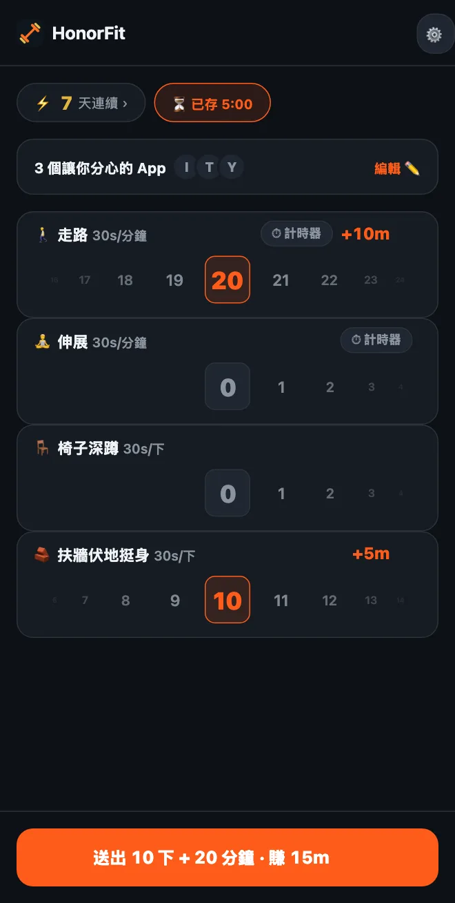

做不了伏地挺身？用低衝擊運動解鎖你的 App
嗨大家好！HonorFit 最常被當成伏地挺身 App 封鎖工具（英文）：你的 App 會一直鎖著，直到你做完幾下、自己記錄下來。但如果你的手腕、肩膀或膝蓋不太喜歡伏地挺身，或是你整天坐辦公桌，或是現在就是做不了伏地挺身，那也完全沒問題。
對我來說，重點從來就不是伏地挺身。重點是在你和滑手機之間放一個小小的減速丘，而它剛好對你有好處。繞著街區走一圈也一樣有效。下面教你怎麼用你真的做得到的運動來設定 HonorFit。
先從內建的開始
一開始就有四種內建運動：伏地挺身、仰臥起坐、引體向上和深蹲。其中最溫和的是深蹲，每一下值 30 秒。
而且因為是誠實制（英文），沒有人會檢查你的深蹲長什麼樣子。如果完整的深蹲太吃力，從椅子上站起來再坐下也算一下。伏地挺身也一樣，可以撐著牆壁或廚房流理台做。一下算什麼由你決定，你只要誠實記錄就好。
自己挑（最多 3 個免費）
從 1.15.0 版開始，改名、刪除運動項目、設定每一項能賺多少，還有新增最多 3 個自己的運動，全部免費。Pro（在美國是每月 3 美元或一次買斷 19.99 美元；各國價格和幣別不同，商店會顯示你當地的價格）則可以想加幾個就加幾個。從首頁的齒輪進去，再點運動項目卡片就到了。編輯畫面的每個步驟我都寫在這裡了。下面是我會考慮的幾類。
計時運動（用分鐘記錄）
把任何運動項目切成分鐘，或點一個有 ⏱ 的建議項目。適合這裡的有：
- 🚶 走路。這是我最推薦的。大概是最容易做到的了。
- 🧘 瑜伽或🤸 皮拉提斯，如果你做的比較像是拉筋，也可以新增一個叫伸展的項目。
- 🏊 游泳和🚴 騎車，兩個對關節都很友善。
- 🪷 冥想。不算運動，但清單裡有，而且用安靜的十分鐘換十分鐘 TikTok，算是很划算的交易。
計時運動從每分鐘換 30 秒 App 時間開始，所以走 20 分鐘可以賺 10 分鐘。滾輪以整分鐘計算，一次最多 100 分鐘。
辦公桌就能做的動作（用次數記錄）
點＋ 新增運動項目，打上名稱。幾個在辦公室或小套房也能做、不需要器材的：
- 椅子深蹲（坐站練習）：從椅子上站起來，再坐回去。
- 扶牆伏地挺身或扶桌伏地挺身：撐著牆壁或穩固的桌子做伏地挺身。撐的位置越高越輕鬆。
- 提踵：踮起腳尖，再放下來。等微波爐的時候就能做。
- 原地踏步：就是建議清單裡的高抬腿，只是放慢。想改名就改。
- 臀橋和凱格爾運動：安靜、不需要器材，而且凱格爾運動在開會時做也沒人知道。我為這兩個寫了一整篇。
撐住不動的運動（棒式、靠牆蹲）
因為分鐘滾輪是以整分鐘計算，20 秒的棒式不太適合放在那裡。我會把這類運動維持在次數，自己決定一下代表什麼，例如「撐 20 秒算一下」。棒式和靠牆蹲都在建議清單裡。
每一項該賺多少？
新的運動項目從每一下 30 秒開始，每次可以加減 5 秒。幾個出發點：
| 運動項目 | 計算方式 | 可賺 | 舉例 |
|---|---|---|---|
| 🚶 走路 | 分鐘 | 每分鐘 30 秒 | 走 20 分鐘 = 10 分鐘 |
| 🧘 伸展 | 分鐘 | 每分鐘 30 秒 | 10 分鐘 = 5 分鐘 |
| 🪑 椅子深蹲 | 次數 | 每下 30 秒 | 10 下 = 5 分鐘 |
| 🧱 扶牆伏地挺身 | 次數 | 每下 30 秒 | 10 下 = 5 分鐘 |
| 提踵 | 次數 | 每下 10–15 秒 | 每下 15 秒做 20 下 = 5 分鐘 |
| 棒式 | 次數（1 下 = 撐 20 秒） | 每下 1 分鐘 | 撐 3 次 = 3 分鐘 |
這些只是我覺得公平的猜測。對的數字，是你會老實付、而不會想灌水的那個。如果走路是你最想養成的習慣，就讓它值多一點，例如每分鐘 1 分鐘。

幾組可以直接抄的設定
- 坐辦公桌的日子：椅子深蹲、扶牆伏地挺身、提踵、走路。
- 溫和版：走路、伸展、椅子深蹲、扶牆伏地挺身（就是上面那張截圖）。
- 放鬆版：走路、瑜伽、冥想。
- 安靜的小套房：臀橋、凱格爾運動、椅子深蹲、走路。
我會建議保持三到四個，因為每一個在首頁都有自己的滾輪。免費版也能湊到四個：把內建運動改名（深蹲改成椅子深蹲、伏地挺身改成扶牆伏地挺身），其餘的當成你的 3 個自訂運動加進去。
還有，如果你有受傷、疼痛或健康上的狀況，請先問你的醫師或物理治療師什麼運動適合你。我是做 App 封鎖工具的，膝蓋的問題真的不該問我 XD
HonorFit Blocker 是 iPhone 和 Android 上的免費 App 封鎖工具。誠實制、不用鏡頭，資料都不會離開你的手機。計時運動和最多 3 個自訂運動都免費，Pro 則沒有上限。它不是適合每個人，但也許你們有些人會喜歡它！